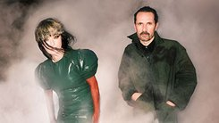
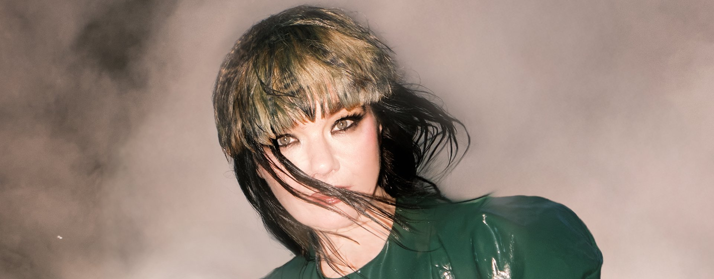

Nature Manifesto：工业建筑里的动物返场
Nature Manifesto 是 Björk 与艺术家、策展人 Aleph Molinari 为巴黎蓬皮杜中心创作的沉浸式声音装置，于 2024 年 11 月 20 日至 12 月 9 日呈现，并被纳入“Biodiversity: Which Culture for Which Future?”相关项目。它不是一场坐在黑盒子里的音乐会，而是安装在蓬皮杜中心标志性的外部自动扶梯中；观众在楼层之间移动时，声音从建筑的通道和表皮中出现。
作品由 Björk 的声音、她与 Aleph 共同构思的生态宣言、自然声景，以及濒危或已经灭绝动物的叫声组成。Centre Pompidou 的项目说明指出，这些声响与 IRCAM 的研究和 AI 模型有关，目的并不是制造一个逼真的自然剧场，而是在现代主义建筑的金属、玻璃和机械移动中放入非人生命的听觉残影。观众会听到的不是一套干净的自然样本，而是被技术处理过的、带有警报感的生命合唱。


这件作品的关键机制在于位置。自动扶梯是蓬皮杜中心最典型的现代建筑符号之一：透明、机械、不断输送人流。把动物叫声放在那里，等于把生态危机嵌入城市文化机构的交通系统。观众不需要主动走进“自然”，而是在前往展厅的过程中被声音拦截。动物不以图像的形式作为被观看对象出现，而以声音的形式侵入人的行动路线。
作品的锋利处在于：AI 在这里不是炫技的图像生产机，而是一种晚到的听觉补偿。它让已经失去现场的声音重新被听见，却也提醒观众：如果一种叫声只能通过模型返场，那么我们听到的同时也是缺席。
项目有官方介绍与社交媒体预告。公开视频可能受平台加载影响，页面保留官方项目入口，适合进一步查看文本、日期和相关说明。
打开 Pompidou 项目页